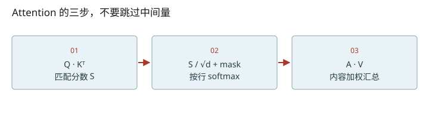
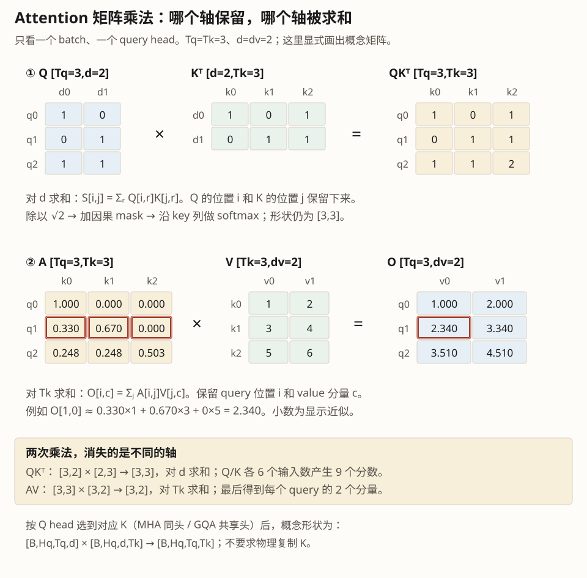
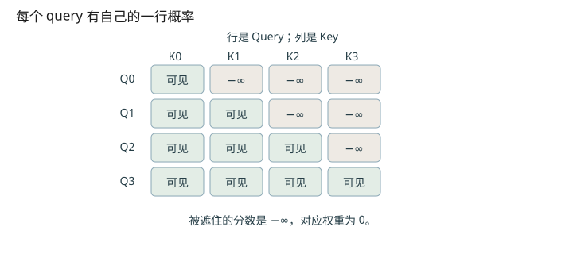

深入篇 16 / Transformer 逐步拆解 · 2026-11-08
亲手算一次 Attention：分数、权重、加权和
从小矩阵算出 attention 输出，区分 QKᵀ 分数、softmax 权重和最终向量。
从小矩阵算出 attention 输出，区分 QKᵀ 分数、softmax 权重和最终向量。

三个矩阵在同一个位置做不同的事
同一个 hidden state 经三组不同权重得到 Q、K、V。可以把 Q 看成“当前要找什么”，K 看成“提供什么匹配线索”，V 看成“真正带回的内容”。这只是解释分工的比喻，头不一定学成可命名的语法规则。公式与缩放动机见原论文 §3.2.1，实际调用见 Attention.forward。
Aᵢⱼ = exp(Sᵢⱼ − mᵢ) / Σₖ exp(Sᵢₖ − mᵢ)
mᵢ = maxⱼ Sᵢⱼ；O = AV [Tq,dv]
softmax 按 key 维度进行：每个 query 的那一行权重和为1。减去行最大值不会改变比例，却能降低指数溢出的风险。遮罩后若整行都是 −∞，归一化没有合法分母；构造 padding / 空序列时要避免把这种行当作正常输出。
跟一个位置算到底
取 q=[1,0]，k₀=[1,0]、k₁=[0,1]，v₀=[1,0]、v₁=[0,2]，d=2。分数是 [1/√2,0] ≈ [0.7071,0]。指数值约 [2.0281,1]，归一化后 [0.6698,0.3302]，所以输出约 [0.6698,0.6605]。输出既不是“选中一个 V”，也不是把 QKᵀ 直接送到下一层。
为什么除以 √d
用一个分析假设理解：若 q、k 的各分量近似独立、均值0、方差1，则 d 项乘积之和的方差约 d，标准差约 √d。维度变大使 softmax 更容易尖锐；除以 √d 控制这一尺度。这是设计动机，不是说训练后的所有激活真服从这个分布；Qwen3 还有 Q/K 的 RMSNorm，仍会使用 head_dim**−0.5。
下面的温度只是帮助观察分布尖锐程度，普通 attention 的固定缩放仍是 1/√d。它和生成采样时对词表 logits 的 temperature 作用在不同位置。
把维度变化拆到每一步
- QKᵀ收缩d，得到位置×位置。
- AV收缩key位置，得到位置×每头特征。


改变变量，验证直觉
启用 JavaScript 后可交互；上面的图和下面的手算练习始终可读。
数值练习：先算，再核对
将上面两个 key 的分数都改成0，V 不变。闭卷算输出；随后在 labs/transformer_lab.py 运行 attention 实验，对照打印的 scores、weights、output。
参考答案
两个权重都为0.5，输出是 [0.5,1.0]。注意概率之和为1，但输出各分量之和无需为1。
闭卷检索
不要回看正文。答错后先解释原因，再重新打开这一课。
把结论落到源码
- 找到 Attention 初始化的 scale，追到 Qwen3Attention 的 head_dim**−0.5。
- 确认 flash_attn_varlen_func 的 causal=True；解释它替代了哪些显式矩阵操作。
以下行号由本地 vendor 文件生成；上游链接固定完整 commit，离线摘录可直接打开。
- nano-qkv：nanovllm/models/qwen3.py L14–91 · 上游证据
- nano-attention：nanovllm/layers/attention.py L43–75 · 上游证据
优先阅读：Attention Is All You Need §3.2.1。
速查：形状与公式 · 三框架映射 · 术语表 · 复习与实战路线 · 4070 Ti本地实验
只在当前浏览器保存自评；不会自动写成已掌握的 learning record。